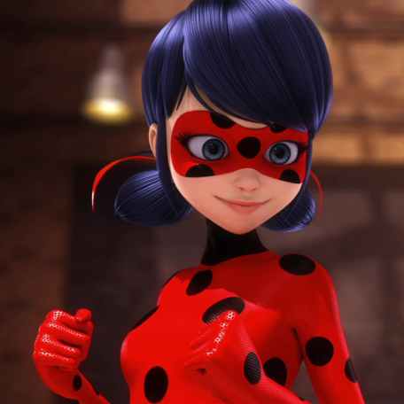
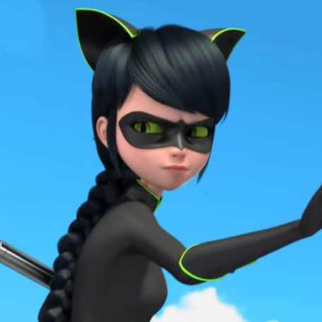
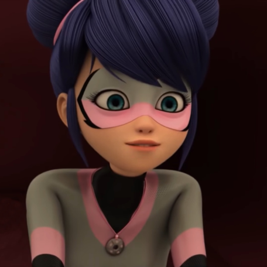
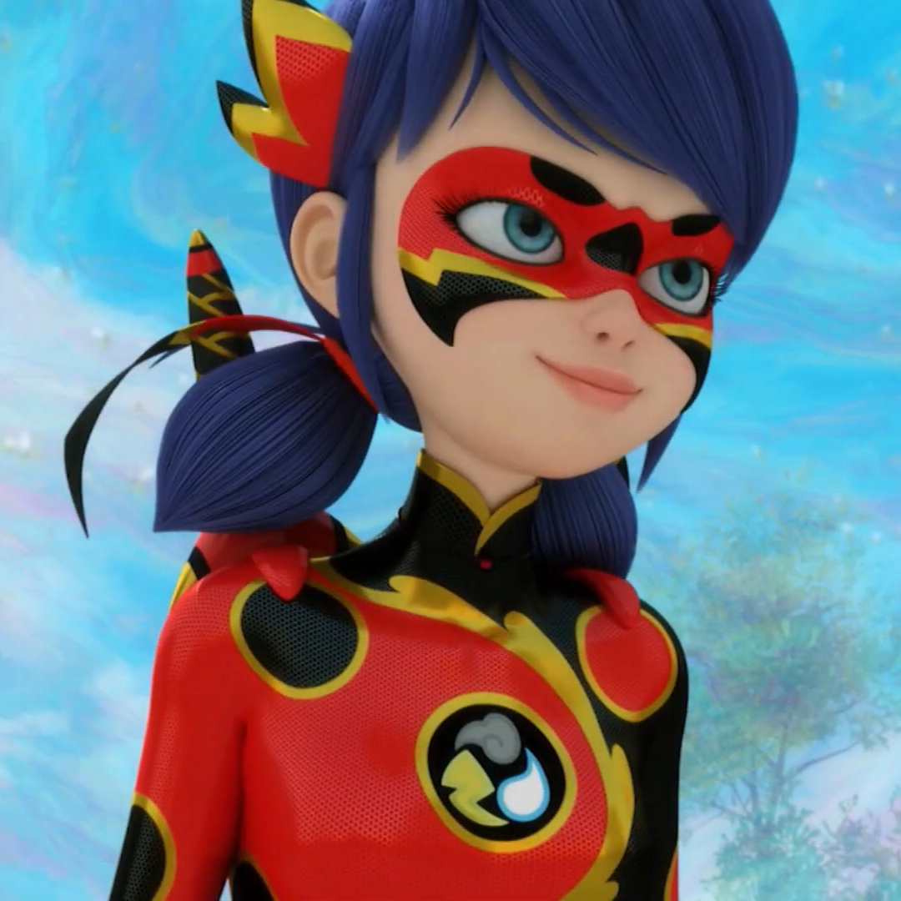
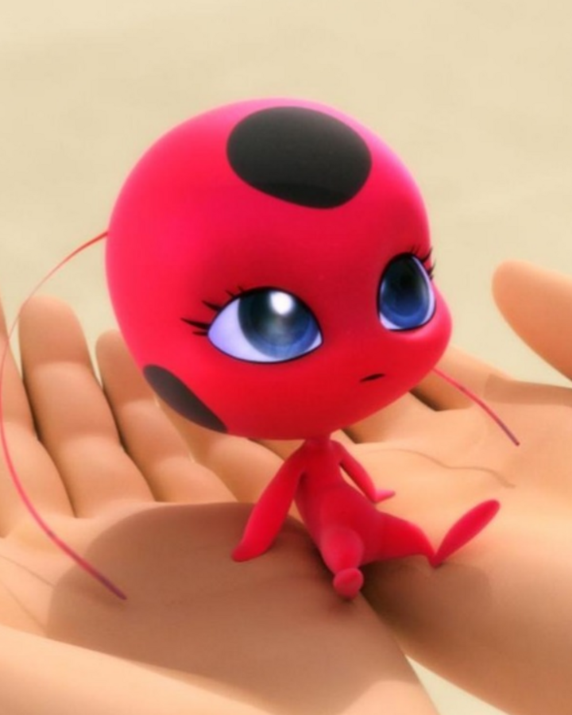

Postacie
Postacie •———————————•🦋•———————————•

╰┈➤Marinette Dupain-Cheng to główna bohaterka serialu ,,Miraculum: Biedronka i Czarny Kot" , córka Toma i Sabine. Jest uczennicą paryskiej szkoły Collège Françoise Dupont oraz początkującą projektantką mody.
Dzięki jej Miraculum, magicznym kolczykom połączonym z Kwami o imieniu Tikki, może przemienić się w super-bohaterkę – Biedronkę o mocy tworzenia i szczęścia.
Jej zadaniem jest pokonanie Władcy Ciem oraz Super-złoczyńców. Od odcinka Królowa Miraculów pełni funkcję Strażnika szkatułki.
╰┈┈┈➤Osobowość
╰┈➤Normalnie Zazwyczaj dziewczyna jest miła, radosna i towarzyska. Uwielbia modę oraz bardzo kocha swoją rodzinę i przyjaciół.
Ma dobre serce i jest bardzo pomocna – zawsze stara się pomagać innym, czasami przedkładając ich interesy nad własne.
Kiedy inne dziewczyny flirtują z Adrienem, staje się zazdrosna i próbuje im przeszkodzić – w odcinku Lisica wykorzystuje moce Biedronki do upokorzenia Lili przed Adrienem. Potrafi się także posunąć do próby dostania się do domu Adriena, jak ukazano w odcinku Oni-chan. Mimo wszystko Marinette uczy się na swoich błędach. Gdy popełni błąd, ostatecznie potrafi się do niego przyznać i przeprosić.
╰┈➤Super-bohaterka Po przemianie w Biedronkę dziewczyna staje się bardziej pewna siebie. Jest zaradna i szybko myśli. Jest uważna i ostrożna, zwykle stara się działać zgodnie z tym, co podpowiada jej rozum. Traktuje swoją pracę super-bohaterki bardzo poważnie, przez co często denerwuje ją lekkomyślne zachowanie Czarnego Kota. W odcinku Królowa Os denerwuje się na Chloé, która za pomocą Miraculum Pszczoły stworzyła fałszywe zagrożenie, bowiem mogło ono doprowadzić do czegoś znacznie poważniejszego. Zawsze stara się uratować wszystkich ludzi, w tym zaakumowanych złoczyńców. Siłę traktuje jako ostateczność, zwykle woli najpierw spróbować przekonać ludzi opętanych przez Akumę, aby zaprzestali swoich działań. Nieważne jak trudne zadania stoją przed nią, zrobi wszystko, aby je wykonać. Jako Biedronka jest liderką paryskiej drużyny super-bohaterów. Traktuje innych bohaterów jak przyjaciół i bardzo ceni sobie ich pomoc. Kiedy Władca Ciem poznaje ich tożsamości, to mimo iż docenia ich pomoc, jest zmuszona do tego, aby nie dać im już Miraculów, ponieważ z troski o nich nie chce, by im lub ich bliskim stała się krzywda. Oddziela także swoją działalność jako super-bohaterka od życia prywatnego i denerwuje się, gdy Nadja pyta ją i Czarnego Kota w wywiadzie, czy są parą. Czasami jednak sprawia jej trudność pogodzenie spraw Marinette i Biedronki, jak na przykład w odcinku Cofelia, gdzie myli swój list do Adriena z listem mistrza Fu do Marianne. Po zmianie w Multimysz charakter dziewczyny nie ulega zmianie. W dalszym ciągu jest skupiona na swoim celu i chce pokonać super-złoczyńcę, aby przywrócić w Paryżu ład. Bardzo szybko i łatwo obmyśla plan działania i od razu wdraża go w życie. Troszczy się również o bezpieczeństwo innych osób i ratuje niewinnych.

Kiedy zmienia się w Biedro-Smoka, jej charakter również się nie zmienia. Dziewczyna dzielnie walczy w obronie Paryża oraz niewinnych ludzi. Chce pokonać Władcę Ciem i odzyskać utracone Miracula. ╰┈➤Marinette jest pół-Francuzką i pół-Chinką. Ma turkusowe oczy i czarne włosy z niebieskimi refleksami. Zazwyczaj wiąże je w dwa kucyki, pozostawia jednak dwa pasma po obu stronach twarzy. Jej grzywka jest zaczesana na lewy bok. ╰┈➤Normalnie Zakłada białą koszulkę w czarno-różowe kwiaty. Nosi również czarny żakiet z kołnierzem, który od wewnętrznej strony jest podszyty białym materiałem w różowe groszki. Do tego ubiera jasnoróżowe spodnie, które kończą się w połowie łydek dziewczyny. Na nogach ma różowe balerinki z czarną kokardką, a w uszach czarne kolczyki (Miraculum Biedronki). Zawsze nosi ze sobą małą, różową torebkę w białe groszki oraz z logiem stworzonym przez Marinette. Torebka zawieszona jest na czarnym sznurku, a w środku najczęściej chowa się Tikki. Na szyi, pod koszulką nosi zawsze zawieszoną na sznurku Kwagatamę. ╰┈➤Biedronka Jej kolczyki zmieniają kolor na czerwony z pięcioma czarnymi kropkami, które znikają kolejno co minutę po użyciu Szczęśliwego Trafu. Ma na sobie wtedy czerwony kombinezon w czarne kropki z czarnym golfem, a na twarzy maskę z takim samym wzorem. Pojawiają się również czerwone wstążki wpięte w jej kucyki. Na biodrach zawiesza swoje jo-jo, gdy go nie używa. Po użyciu Szczęśliwego Trafu ma tylko 5 minut do stania się normalną dziewczyną. ╰┈➤Czarna Kotka Po przemianie wygląd Marinette zmienia się bardziej niż zwykle. Kruczoczarne włosy swobodnie opadają na boki twarzy, czoło zaś zasłania grzywka ułożona w lewo. Reszta włosów spięta jest w długi warkocz, wyglądem przypominający koci ogon. Jej oczy bardziej przypominają kocie. Białka są koloru zielonego. Twarz dziewczyny zasłania czarna maska, a na głowie widnieją kocie uszy. Bohaterka jest ubrana w czarną bluzkę oraz spodnie. Na rękach nosi czarne rękawiczki sięgające łokci, zaś na nogach buty, które sięgają prawie do kolan. Zarówno rękawiczki jak i buty posiadają wykończenia w kolorze zieleni. Jej biodra oplata czarny pasek z zielonymi zdobieniami. Kostium jest zapinany pod szyją zamkiem, który jest koloru zielonego. Na podeszwie można zobaczyć zieloną kocią łapkę.

╰┈➤Multimysz Po założeniu Miraculum Myszy, kucyki Marinette zmieniają się w wysokie koki, które związuje różowymi wstążkami. Twarz zasłania trzy kolorowa maska — szara u góry oraz różowa u dołu, na bokach posiadająca czarne wykończenia. Dziewczyna ubrana jest w szary kostium z czarnym kołnierzem, który został wykończony różowym materiałem. Posiadaczka Miraculum nosi również czarne rękawiczki sięgające połowy ramienia oraz czarne buty z różowymi podeszwami, które sięgają połowy ud. Zarówno buty, jak i rękawiczki, posiadają różowe wykończenia. Biodra dziewczyny oplata skakanka, która przedłuża się, imitując mysi ogon. Na jej szyi można zauważyć Miraculum Myszy.

╰┈➤Biedro-Smok Na twarzy dziewczyna nosi czerwoną maskę z czarnymi kropkami oraz zdobieniami w kolorze czarnym oraz złotym. We włosach ma wpięte czerwono-czarne wstążki. Dodatkowo zza uszu wystają czerwono-złoto-czarne ozdoby uformowane w dwa płaskie rogi. Kostium bohaterki podzielony jest na dwie części - czarny oraz czerwony. Lewa część stroju Biedro-Smoka jest czarna z czerwonymi kropkami. Prawa strona jest koloru czerwonego z czarnymi kropkami. Przejścia pomiędzy czerwienią i czernią są oddzielone złotymi zdobieniami.

╰┈┈➤ Miraculum
╰┈➤Miraculum Biedronki — kolczyki połączone z Kwami o imieniu Tikki, które pozwalają posiadaczowi przemienić się w super-bohatera. Obecnie posiada je Marinette Dupain-Cheng.

╰┈┈➤Kwami
╰┈➤ Tikki – Kwami biedronki, zwane również Kwami tworzenia , połączone z Miraculum Biedronki, którego właścicielem jest Marinette Dupain-Cheng. Pomaga dziewczynie przemienić się w super-bohaterkę, by zwalczyła zło zagrażające całemu Paryżowi.
